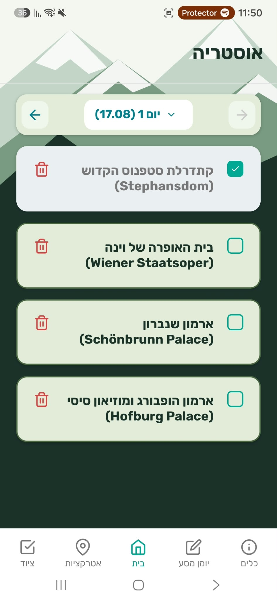

← Back to Portfolio
← Portfolio
 TripDiary
TripDiary
Most travel planning tools fail when roaming drops in transit. TripDiary was engineered as a self-contained, offline-first execution engine: parsing complex spreadsheet itineraries, managing day-by-day routing, and compiling daily logs into printable PDF backups directly on-device.

Travel itineraries are routinely scattered across disparate spreadsheets, confirmation emails, and messaging apps. When cellular coverage drops in transit or abroad, travelers lose access to basic logistics like reservation IDs, check-in windows, and daily schedules.
Rather than forcing users into rigid data-entry templates they consistently reject, TripDiary employs a resilient Excel ingestion engine. It safely extracts dates, split costs, and notes across inconsistent columns, normalizing dirty user data into a coherent offline database.
The app minimizes cognitive load on the move. Features like single-tap external GPS triggers, on-device currency calculations, and instantaneous A4 PDF exports ensure travelers maintain operational continuity even during catastrophic phone battery or network loss.
Every view is designed for rapid one-handed scanning and absolute local responsiveness:
Bundling embedded map rendering packages introduced heavy native memory overhead and caused fatal initialization crashes when launching without network reachability. We eliminated the native MapView entirely, opting for lightweight metadata cards paired with external Google Maps intent triggers.
The client journal maintained a LIFO state (newest entries first) for fast on-the-go logging. Compiling this state directly produced inverted PDF printouts. We refactored the HTML synthesis pipeline to isolate the print data flow and enforce strict chronological morning-to-night sorting.
Under bi-directional RTL configuration, the Android navigation stack incorrectly identified the left-most tab as the root screen, causing hardware back button clicks to prematurely terminate the process. We locked initialRouteName to the central Home tab and implemented custom BackHandler interception.